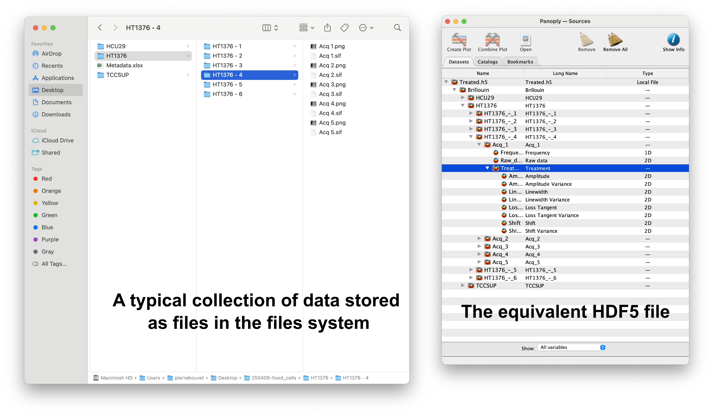

The project in a nutshell
The strategy for unifying the field of Brillouin Light Scattering (BLS) data
This project starts with the observation that different laboratories have different ways of storing their data, processing their data and sharing their data. These differences are not important until meta-studies are performed or studies where results need to be quantified.
The underlying problem here is not clearly identified: differences between measures can come from the sample being used, the instrument or the processing steps after the measurement. To try to solve this problem, we here propose to unify the field of Brillouin Light Scattering (BLS) data by building a new file format that can be used to store and share BLS data, and a set of tools to process this data.
The main challenge of this project is the amount of different datasets that are used in BLS experiments, the diversity of treatments, and the very finite time individual researchers have to spend on moving towards unified solutions. To solve this problem, we have built this project as a hierarchical project where each each hierarchical levels is an option to do things in a normalized way that the user can choose to use or not, either because the solution cannot be used by them directly, or simply because they cannot spend the time to learn it.
To give a clear vision of the idea, here is a step by step description of what we propose :
A file format (HDF5)
With a basic structure to differentiate all HDF5 files from the ones we are going to use in BLS
Based on the idea of isolating measures from each other by assigning them a hierarchical level (a group)
That can be organized hierarchically to differentiate measures obtained from different samples, instruments, etc.
And giving each element of a measure (the measure itself, the derived datasets), a unique identifier to allow users to easily identify their nature
While also allowing users to store metadata associated to each measure
And providing a set of norms to store their data and attributes in a normalized way
And a built-in solution for storing any code that can be used on the data to process it, treat it, visualize it, etc.
Which can be based on normalized processing libraries we provide to extract a power spectrum from the data and fit it to a model
Note
A new user can therefore just start by storing their data in the file format, and then evolve to store their data in the more normalized fashion proposed here. As we generally re-use past codes, this means that the efforts made to use this project and normalize the storage and processing of data in the community can be spread while enjoying the benefits each steps of the process brings (e.g. having stored all the attributes of an experiment with your measure will save you a lot of time if you need to go back to it later and try to remember what you did).
Generally speaking, this project is aimed at helping users to solve challenges we all face when dealing with BLS data with custom solutions meant to be as universal as possible while still being normalized and easy to use, so that in the future, using this project will allow us all to share our BLS data and to perform meta-studies on them.
A quick overview
The file format is built to reproduce the file structure of a classical directory, with added benefits:
storage of datasets in a universally readable format
storage of all data related to a given experiment in a single file that can be shared and that cannot be used to store executable code
storage of metadata associated to the data together with the data
storage of any BLS-related measures together with the BLS data (e.g. fluorescence, absorbance, grayscale images, etc.)
storage of results of data processing
storage of custom codes to process the data
storage of algorithms steps when using the developped data processing tools
As an example, Fig. 1 shows a concrete example of file structure corresponding to an experiment (left) and the corresponding HDF5 file (right, displayed using Panoply), used to store Brillouin Light Scattering data.
{kind=link}

Fig. 1 A concrete example of measures stored in a file system (left) and the corresponding HDF5 file structure (right, using Panoply).
File format limitations
The file format is a minimally constrained HDF5 file. It can therefore be used to store any kind of data, with any dimension.
The normalizations proposed on the datasets apply to their shape, but following these norms is optional as long as the data doesn’t have to be shared with the community.
Metadata are also not constrained per default. Here again, you are not forced to abide by any norms as long as the data doesn’t have to be shared with the community. We however strongly encourage users to use the proposed norms as we have developed tools to minimize the amount of work to re-use metadata from previous experiments. This means that if you already have a metadata file normalized with the proposed norms, you will save you a lot of time the moment you need to share your data with the community.
To know more about the norms, please refer to the :ref:`normalization` section.
Codes can be stored as simple text files in the attributes of the file. This allows you to store virtually everything you might ever use or have used to treat or visualize your data. Normalizing these data processes however, will ask the user to use fixed algorithms.
To normalize these data processing steps, we have developed two libraries: - The HDF5_BLS_analyse module allows to define new algorithms to analyse the data (to extract a Power Spectral Density and a frequency axis from the data) - The HDF5_BLS_treat module allows to define new algorithms to treat the data (to fit the data to a model, extract the results of the fit, etc.)
These libraries are built with an object oriented approach, meaning that they both define an object to do the treatment. These objects can easily be stored in the HDF5 file using custom methods of the HDF5_BLS.Wrapper class. This option is more interesting than the storage of scripts as it not only allows the user to use normalized data processes, but it also minimizes memory complexity and uses treatments that are optimized, editable and shareable with standalone JSON files.
Storing different datasets in the file format
In a general BLS experiment, the user will retrieve a series of values that have been collected. These values are not necessarily of the same physical nature (it can be the number of photons collected, an intensity profile varying with position or time, etc.). These measures are stored in the file format as “raw data”.
They however all carry enough information to “see” the Brillouin light scattering (BLS) signal on a spectrum (the Power Spectral Density or PSD). This more valuable information is stored as a “PSD” dataset, and is associated to a “frequency” dataset. The collection of these two datasets constitutes a basis for any measure, and is stored in a dedicated group for the measure.
When these measures correspond to different parameters (a position in a sample, a time point, a given concentration, etc.), we need to store together with these measures, the values of these parameters. This is done with an “abscissa” dataset that is stored together with the raw data or PSD, under the same “measure” group.
From there, we usually retrieve the shift and the linewidth of the peaks. These are stored as “shift” and “linewidth” datasets. Other results can also be stored such as the amplitude of the peaks, the Brillouin loss tangent (BLT), the standard deviation of the shift, the standard deviation of the linewidth, etc. To allow for multiple treatments of the same “PSD” datasets to be stored together with it, we create for each collection of results, a dedicated “treatment” group, where these results are stored.
Additionally, we can store impulse responses to characterize the instrument in a dedicated “Impulse response” group to differentiate it from the normal measures. We can also store the calibration spectrum in a dedicated “Calibration spectrum” group with the same idea. This distinction is aimed at allowing noramlization algorithms to be applied to the data automatically in future meta-studies involving all the community.
To organize this file hierarchically, we also need groups dedicated to storing groups. As they form the basis of a branch of the file tree, we call them “Root” groups.
Overall, the diffrent types of groups and datasets that can be stored in the file format are shown in Fig. 2.

Fig. 2 A visual representation of the Brillouin_type attribute for groups and datasets in the HDF5 file.
To make the file human readable, we do not store the types of this groups and datasets in their name, but we create instead a dedicated attribute called “Brillouin_type” that allows to know the type of the element. Note that if this string is not given or recognized, it is set to “Other” by default. This attribute is therefore the first step in normalizing the file format.
Important
This very logical vision of the file format is not restrictive, and if you prefer to not store the raw data because you think it’s not useful anymore, you don’t have to. Same goes for the results: if you only need the shift array, you can just store this array. Same goes for the hierarchy: if you want to store the abscissa array in a parent group so that it applies to all the children measure groups, you can do so. To however allow sharing of these data with the community, we have defined a series of norms we rpesent in the Normalization rules for the BioBrillouin community section.